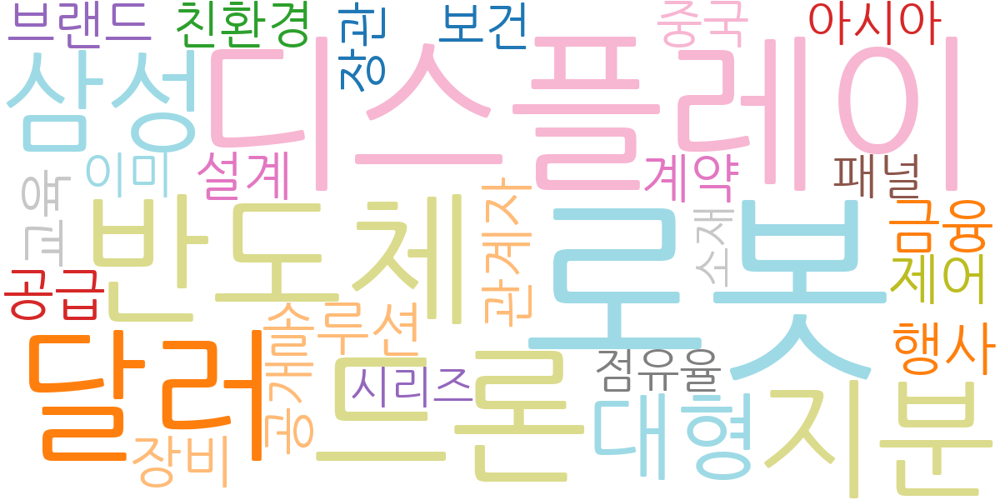
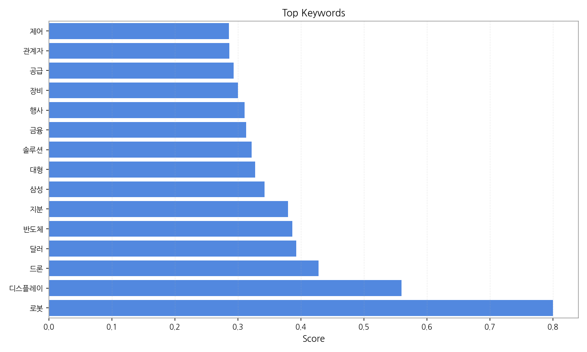
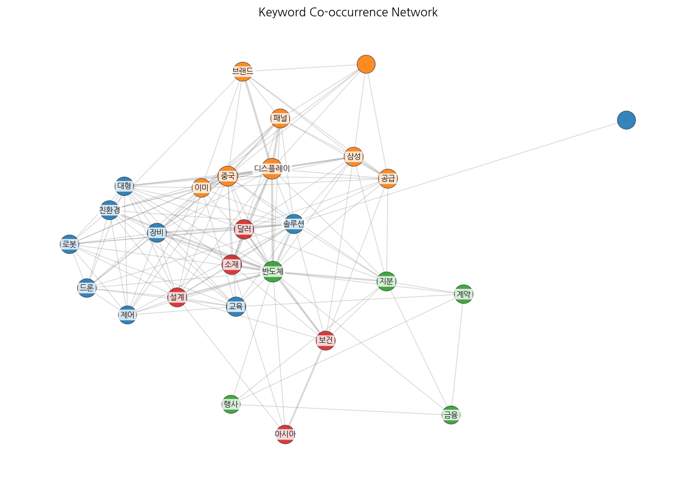
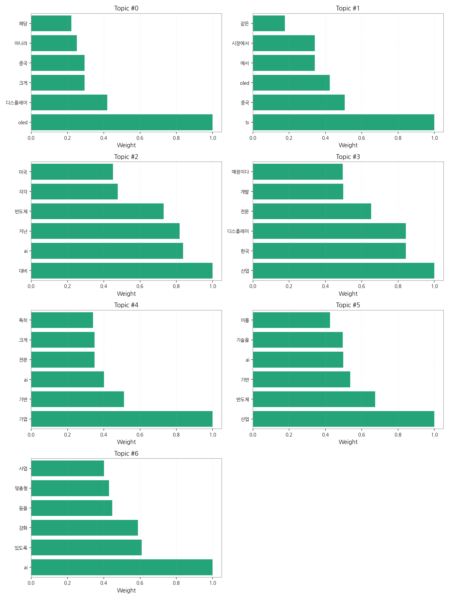

1) 상위 토픽을 3개 주제로 묶어 핵심 맥락을 설명하면 다음과 같습니다. 첫째, 디스플레이 산업의 경쟁 심화는 OLED를 중심으로 한국과 중국 기업 간의 경쟁이 치열하게 전개되고 있음을 보여줍니다. 둘째, AI 기반 산업의 발전과 경쟁력 강화는 AI 기술을 반도체, 디스플레이 등 다양한 산업 분야에 접목하여 경쟁력을 높이려는 노력을 반영합니다. 마지막으로, 한국 산업의 AI 및 차세대 기술 도입은 한국 기업들이 AI 기술을 중심으로 산업 경쟁력을 강화하고 미래 기술을 선점하려는 전략을 나타냅니다. 이러한 세 가지 주제는 서로 밀접하게 연관되어 있으며, 한국 경제의 미래 성장 동력을 확보하기 위한 핵심 과제들을 보여줍니다.
2) 최근 변화/스파이크를 짚어보면, 9월 11일부터 16일 사이에 기사 수가 급증했습니다. 이는 특정 시점에 디스플레이, AI, 반도체 산업 관련 주요 뉴스나 정책 발표가 있었음을 시사하며, 이로 인해 언론의 집중적인 보도가 이루어진 것으로 추측됩니다.
3) 실무 인사이트 3가지:

| Rank | Keyword | Score |
|---|---|---|
| 1 | 로봇 | 0.800 |
| 2 | 디스플레이 | 0.560 |
| 3 | 드론 | 0.428 |
| 4 | 달러 | 0.392 |
| 5 | 반도체 | 0.386 |
| 6 | 지분 | 0.379 |
| 7 | 삼성 | 0.342 |
| 8 | 대형 | 0.327 |
| 9 | 솔루션 | 0.321 |
| 10 | 금융 | 0.313 |
| 11 | 행사 | 0.311 |
| 12 | 장비 | 0.300 |
| 13 | 공급 | 0.293 |
| 14 | 관계자 | 0.286 |
| 15 | 제어 | 0.286 |



1) 상위 토픽을 3개 주제로 묶어 핵심 맥락을 설명하면 다음과 같습니다. 첫째, 디스플레이 산업의 경쟁 심화는 OLED를 중심으로 한국과 중국 기업 간의 경쟁이 치열하게 전개되고 있음을 보여줍니다. 둘째, AI 기반 산업의 발전과 경쟁력 강화는 AI 기술을 반도체, 디스플레이 등 다양한 산업 분야에 접목하여 경쟁력을 높이려는 노력을 반영합니다. 마지막으로, 한국 산업의 AI 및 차세대 기술 도입은 한국 기업들이 AI 기술을 중심으로 산업 경쟁력을 강화하고 미래 기술을 선점하려는 전략을 나타냅니다. 이러한 세 가지 주제는 서로 밀접하게 연관되어 있으며, 한국 경제의 미래 성장 동력을 확보하기 위한 핵심 과제들을 보여줍니다.
2) 최근 변화/스파이크를 짚어보면, 9월 11일부터 16일 사이에 기사 수가 급증했습니다. 이는 특정 시점에 디스플레이, AI, 반도체 산업 관련 주요 뉴스나 정책 발표가 있었음을 시사하며, 이로 인해 언론의 집중적인 보도가 이루어진 것으로 추측됩니다.
3) 실무 인사이트 3가지:
| Idea | Target | Value Prop | Score |
|---|---|---|---|
| AI 기반 디스플레이 품질 예측 및 관리 플랫폼 (KR) | 한국 디스플레이 제조 기업 (LG디스플레이, 삼성디스플레이 등) 생산/품질 관리 부서, 중견/대기업 | AI 기반 예측 분석으로 불량률을 최대 15% 감소시키고, 생산 효율을 10% 향상시키는 플랫폼입니다. 경쟁사 대비 차별화된 AI 알고리즘과 실시간 모니터링 기능을 제공합니다. | 4.50 |
| 모빌리티-디스플레이 연동 서비스 개발 (KR) | 한국 자동차 제조사 및 디스플레이 제조사, 대기업 | 운전자의 상황과 선호도에 맞춰 정보를 제공하는 맞춤형 디스플레이 서비스입니다. 경쟁사 대비 차별화된 사용자 인터페이스(UI)와 운전자 안전 기능을 제공합니다. 최근 증가하는 커넥티드카 시장을 공략합니다. | 4.20 |
| 디스플레이 부품 조달 플랫폼 구축 (JP) | 일본 디스플레이 제조 기업 및 부품 공급업체, 중소/중견기업 | 다양한 부품 공급업체를 연결하고, 투명하고 효율적인 조달 시스템을 제공하는 플랫폼입니다. 경쟁력 있는 가격과 신속한 조달을 지원하여 차별화된 원가 절감 효과를 제공합니다. | 4.00 |
| AI 기반 사이니지 광고 플랫폼 (EU) | 유럽 지역 사이니지 운영 기업 및 광고주, 중소/대기업 | AI 기반으로 실시간 광고 효과 측정 및 타겟팅 광고를 제공하는 플랫폼입니다. 경쟁사 대비 정확한 데이터 분석과 효율적인 광고 운영을 통해 차별화된 ROI를 제공합니다. | 3.80 |
| 전자 제조 공정 데이터 분석 서비스 (EU) | 유럽 전자 제조 기업, 중견/대기업 | 클라우드 기반의 전자 제조 공정 데이터 분석 서비스를 제공합니다. 경쟁사 대비 정확하고 신속한 데이터 분석을 통해 생산 효율을 최대 10% 향상시키고, 불량률을 5% 감소시킵니다. 최근 EU의 디지털 전환 정책에 발맞춰 데이터 기반 의사결정을 지원합니다. | 3.50 |